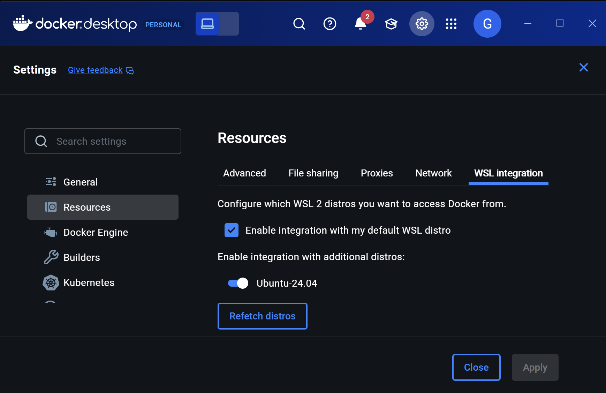
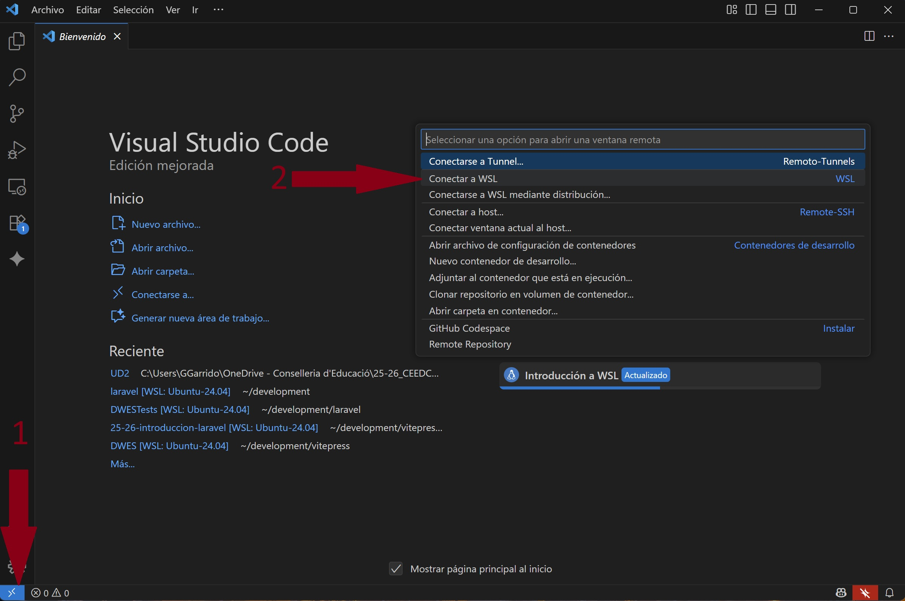
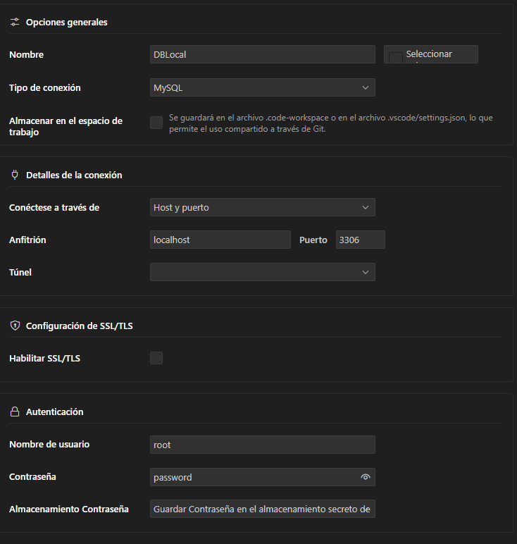
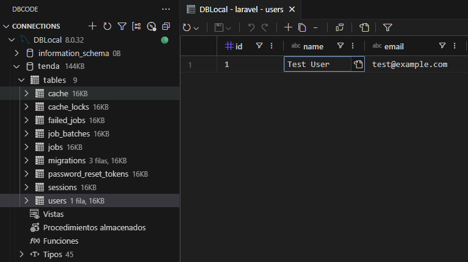

Pràctica guiada¶
Pràctica guiada¶
En esta pàgina treballes 3 criteris d'avaluació (RA1, RA4, RA5)
- RA1.g S'han reconegut i avaluat les ferramentes i frameworks de programació en entorn servidor. (Tenda: entorn professional)
- RA4.f S'han utilitzat ferramentes i entorns per a facilitar la programació, prova i depuració del codi. (Tenda: entorn professional)
- RA5.e S'han identificat i aplicat els paràmetres relatius a la configuració de l'aplicació web. (Tenda: entorn professional)
Autoavaluació guardada només en este navegador · Mostra tot el que he de saber fer.
Glossari tècnic
| Terme | Definició |
|---|---|
| Framework | Conjunt d'eines i regles preestablides que permeten construir aplicacions web de manera més ràpida i organitzada. |
| Framework "opinat" | Framework que pren decisions ben fonamentades sobre la millor manera d'estructurar una aplicació basant-se en l'experiència de la comunitat. |
| Laravel | Framework d'aplicacions web basat en PHP, dissenyat amb una sintaxi expressiva i elegant. |
| Artisan | Interfície de línia de comandaments (CLI) inclosa amb Laravel per a accelerar el desenvolupament generant components automàticament. |
| Tinker | Consola interactiva REPL (Read-Eval-Print Loop) per a provar codi PHP en temps real amb Laravel. |
| Service Container | Mecanisme que permet a Laravel crear automàticament els objectes que el codi necessita mitjançant injecció de dependències. |
| Client-Servidor | Model de comunicació en què el client (navegador) sol·licita recursos i el servidor (Laravel) els processa i respon. |
| Port | Número que identifica servicis específics en un servidor (80 per a HTTP, 443 per a HTTPS, 8000 per a desenvolupament). |
| HTTP | Protocol de Transferència d'Hipertext, l'idioma comú per a la comunicació web. |
| HTTPS | Versió segura d'HTTP que afig xifratge TLS a la comunicació per a garantir la privacitat i la integritat de les dades. |
| Stateless | HTTP no guarda memòria entre peticions; cada petició és independent. Laravel usa sessions/cookies per a mantindre l'estat. |
| CRUD | Create, Read, Update, Delete - les 4 operacions bàsiques corresponents a POST, GET, PUT/PATCH, DELETE en HTTP. |
| Nginx/Apache | Servidors web que actuen com a "porters": reben peticions HTTP i les passen a Laravel per al processament PHP. |
| Hosting | Servici que proporciona espai en un servidor per a allotjar una aplicació web (Compartit, VPS, Dedicat, IaaS/Núvol). |
| Composer | Gestor de dependències estàndard per a PHP, essencial en l'ecosistema Laravel. |
| npm | Node Package Manager, gestor de paquets per a JavaScript i eines de frontend. |
| Git | Sistema de control de versions distribuït que registra els canvis en els fitxers al llarg del temps. |
| Docker | Tecnologia que permet empaquetar aplicacions amb les seues dependències en contenidors aïllats i portables. |
| Laravel Sail | Interfície de línia de comandaments que simplifica Docker per a Laravel i genera la configuració automàticament. |
| Vite | Eina de compilació moderna per a frontend adoptada per Laravel, amb una velocitat de desenvolupament instantània. |
| Tailwind CSS | Framework CSS "utility-first" que construïx dissenys amb classes predefinides directament en l'HTML. |
| Purge | Procés de Tailwind que elimina les classes no utilitzades en producció i genera un CSS ultraoptimitzat (10-20 KB). |
| MVC | Patró de disseny que separa l'aplicació en Model (dades), Vista (presentació) i Controlador (coordinador). |
| .env | Fitxer de configuració de l'entorn que conté informació sensible (credencials de BD, claus d'API). No l'has de pujar mai a Git! |
| Laravel Telescope | Eina de depuració que permet monitorar sol·licituds, excepcions, consultes de base de dades, esdeveniments i més en temps real. |
| PHPStan | Eina d'anàlisi estàtica de codi PHP que troba errors sense executar el codi, i millora la qualitat del programari. |
| PHP_CodeSniffer | Eina que detecta, i pot corregir automàticament, les infraccions d'estàndards de codificació com PSR-12. |
| Laravel Pint | Eina oficial de Laravel per a formatar codi PHP, dissenyada per a mantindre un estil de codi net i consistent. |
| PSR-12 | Estàndard de codificació PHP que definix regles de format per a escriure codi PHP consistent i llegible. |
FAQ (Preguntes freqüents sobre la pràctica)
-
En executar
wsl --installem diu que WSL ja està instal·lat. Què faig?Açò és normal si ja havies instal·lat WSL abans. Pots verificar quines distribucions tens amb
wsl -l -v. Si no tens Ubuntu 24.04, instal·la-la ambwsl --install -d Ubuntu-24.04. Si ja la tens, simplement obri Windows Terminal i selecciona Ubuntu. -
Docker Desktop no arranca o mostra errors relacionats amb WSL2
Assegura't que WSL2 està instal·lat correctament executant
wsl --statusen PowerShell. Si veus errors, intenta:- Actualitzar WSL amb
wsl --update, - Reiniciar el servici amb
wsl --shutdowni tornar a obrir Ubuntu, - Verificar en Docker Desktop Settings > Resources > WSL Integration que Ubuntu està habilitat.
- Actualitzar WSL amb
-
El comandament
sail up -d --buildfalla amb "port is already allocated"El port 80 o 3306 l'està usant un altre servici (Apache, MySQL local, un altre projecte Docker). Solucions:
- Para els servicis locals:
sudo systemctl stop apache2 mysqlen Ubuntu/WSL, - Canvia els ports en el
.envdel teu projecte (per exemple:APP_PORT=8000), - Verifica projectes Docker anteriors amb
docker psi para'ls ambsail down.
- Para els servicis locals:
-
Veig "Connection refused" en intentar accedir a l'aplicació
Verifica que els contenidors s'estan executant amb
sail ps. Si estan "Up", el problema pot ser:- Espera 30-60 segons després d'executar
sail up, els contenidors tarden a estar preparats, - Verifica que no tens Apache local usant el port 80:
sudo systemctl status apache2, - Intenta accedir a
http://localhost:80explícitament o al port configurat en el teu.env.
- Espera 30-60 segons després d'executar
-
Les migracions fallen amb "Access denied for user"
Verifica el teu fitxer
.env:DB_HOSTha de sermysql(no127.0.0.1),DB_USERNAMEha de sersail,DB_PASSWORDha de serpassword,DB_DATABASEha de coincidir amb la base inicialitzada. Executasail artisan config:cleardesprés de canviar la configuració. Reiniciar no canvia les credencials guardades en un volum MySQL existent; consulta la fase 5 de l'Opció A.
-
No es troba el comandament
saildesprés de crear l'àliesHas de recarregar el fitxer de configuració del shell:
- En Ubuntu/WSL executa
source ~/.bashrc, - En macOS executa
source ~/.zshrc, - O simplement tanca i torna a obrir la terminal. Verifica que estàs en el directori del projecte abans d'usar
sail.
- En Ubuntu/WSL executa
-
npm installonpm run buildfallen amb errors de permisosAçò pot ocórrer per permisos de fitxers entre Windows/WSL. Solucions:
- Executa els comandaments amb
sail npm installen compte denpm installdirectament, - Si el projecte està en una carpeta de Windows (
/mnt/c/...), mou-lo al teu home de WSL (~/development/), - Executa
sail downisail up -dper a reiniciar els contenidors.
- Executa els comandaments amb
-
Telescope mostra "419 Page Expired" o errors CSRF
Açò sol passar després de reiniciar els contenidors. Solucions:
- Neteja la memòria cau amb
sail artisan config:clearisail artisan cache:clear, - Esborra les cookies del navegador per a
localhost, - Verifica que el fitxer
.envté unaAPP_KEYgenerada (si no, executasail artisan key:generate).
- Neteja la memòria cau amb
-
Els estils de Tailwind no s'apliquen en la pàgina de benvinguda
Verifica:
- Que has executat
sail npm installper a instal·lar les dependències, - Que has executat
sail npm run buildper a compilar els assets, - Que el fitxer
resources/css/app.cssté el contingut correcte, - Que en
welcome.blade.phphi ha la directiva@vite(['resources/css/app.css']), - Neteja la memòria cau del navegador (Ctrl+F5 o Cmd+Shift+R).
- Que has executat
-
PHPStan o PHP_CodeSniffer mostren molts errors en fitxers que no he modificat
És normal. Estàs analitzant codi generat per Laravel que seguix les seues pròpies convencions. Pots:
- Ignorar estos fitxers afegint-los a la configuració d'exclusió,
- Centrar-te només a analitzar el teu codi en
app/amb comandaments específics, - PHPStan i PHPCS són ampliacions opcionals en l'Opció A. Per a PHPStan es demana una anàlisi sense errors: revisa cada diagnòstic i corregix o configura l'anàlisi amb criteri. En PHPCS s'admet mostrar les diferències d'estil detectades.
-
Puc parar els contenidors quan no estic treballant?
Sí, és recomanable per a alliberar recursos. Usa
sail downper a parar els contenidors (les dades persistixen en volums). Per a tornar a treballar, executasail up -d. Si vols eliminar-ho TOT, incloses les dades:sail down -v(compte, açò esborra la base de dades!). -
En personalitzar la botiga, quins fitxers he de modificar?
Només necessites modificar
resources/views/welcome.blade.phpcanviant els textos i les dades estàtiques (nom de la botiga, productes, contacte, xarxes socials). NO modifiques l'estructura HTML ni el CSS deresources/css/app.css. L'objectiu és personalitzar el contingut, no el disseny.
Explicació del projecte:¶
El projecte consistix a desenvolupar una pàgina web d'una botiga en línia feta amb Laravel, on l'objectiu és mostrar un catàleg de productes de manera clara i ordenada. La web tindrà una portada amb seccions típiques de comerç electrònic: productes destacats, novetats o "el més venut", i un bloc d'ofertes o productes amb descompte per a atraure l'atenció. La idea és que l'usuari puga entrar i, en pocs segons, entendre què ven la botiga i què val la pena veure primer.
A més, el catàleg s'organitzarà per categories (per exemple: informàtica, accessoris, llar, etc.), de manera que l'usuari puga filtrar-hi o navegar-hi per a trobar el que busca. Cada producte tindrà la seua fitxa amb informació bàsica (nom, preu, descripció, imatge, estoc si es treballa) i es planteja també una lògica de negoci senzilla: marcar productes com a "destacats", aplicar descomptes/ofertes, i mostrar llistats coherents (per categoria, per oferta, per destacats).
En resum: un minicomerç electrònic realista per a practicar el flux complet de Laravel (rutes, controladors, vistes, base de dades i dades d'exemple).
Esta primera pràctica guiada, que consistix en la configuració de l'entorn per al projecte en Laravel, la podrem fer de dues maneres:
Opció A: Pràctica per a lliurar d'entorn modern amb Docker
Objectiu de l'activitat¶
L'objectiu d'esta pràctica és configurar un entorn de desenvolupament professional i desacoblat, utilitzant eines modernes com un entorn de línia de comandaments potent, Docker i Laravel Sail. Este enfocament aïlla les dependències de cada projecte, evita conflictes en el nostre sistema amfitrió i ens prepara per a un flux de treball semblant al que es troba en la indústria del desenvolupament de programari.
Esta guia s'adreça a Windows amb WSL2 i Ubuntu 24.04, amb Laravel 12, PHP 8.4 i Tailwind CSS 4. macOS i altres distribucions Linux requerixen instruccions pròpies per a instal·lar eines i configurar el shell.
Filosofia de treball¶
Abans de començar, és fonamental entendre per què adoptem este model:
- Sistema amfitrió net: Mantenim el nostre sistema operatiu principal (Windows) net, i l'utilitzem per a aplicacions d'interfície gràfica com el navegador, Visual Studio Code i Docker Desktop.
- Entorn de desenvolupament unificat: Totes les eines de línia de comandaments (CLI), llenguatges i servidors residiran en un entorn Unix-like (Ubuntu 24.04 dins de WSL2). Açò ens oferix potència i compatibilitat.
- Docker i Laravel Sail per a projectes aïllats: Cada projecte s'executarà en el seu propi conjunt de contenidors Docker. Açò n'aïlla les dependències i proporciona un entorn de desenvolupament reproduïble entre els membres de l'equip. Els ports publicats han d'estar disponibles en l'amfitrió. Sail està pensat per a desenvolupament local; producció requerix la seua pròpia configuració.
FASE 1: Posant les bases (terminal, eines i Docker)¶
En esta fase instal·larem el programari fonamental en el nostre sistema amfitrió.
1.1. Preparar l'entorn base: Terminal i gestor de paquets¶
Necessitem una terminal potent i un gestor de paquets per a instal·lar programari fàcilment.
Instal·lar WSL2, Ubuntu 24.04 i Windows Terminal¶
Usarem PowerShell com a Administrador per a estos comandaments. WSL2 ens proporciona un entorn Linux complet dins de Windows.
-
Instal·la WSL2 i Ubuntu 24.04 LTS:
Reinicia l'equip si se sol·licita. En tornar, s'obrirà una terminal d'Ubuntu que et demanarà que crees un usuari i una contrasenya. Anota'ls!@@CODE@@ -
Instal·la Windows Terminal utilitzant
winget:@@CODE@@
Atenció
Si winget no està disponible, instal·la o actualitza App Installer (Instal·lador d'aplicacions) des de la Microsoft Store. Windows Terminal i WinGet són eines diferents.
1.2. Instal·lar Visual Studio Code i Docker Desktop¶
Estes són les nostres eines principals de desenvolupament.
Instal·lar amb Winget¶
Executa estos comandaments en PowerShell com a Administrador:
@@CODE@@
Per a Docker-Desktop, descarrega'l i instal·la'l des de la seua pàgina oficial. Assegura't que l'opció "Use WSL 2 based engine" està marcada durant la instal·lació.
1.3. Configurar la integració de Docker (només Windows)¶
Si estàs en Windows, hem d'assegurar-nos que Docker i WSL2 es comuniquen correctament.
- Obri Docker Desktop.
- Ves a
Settings > Resources > WSL Integration. - Assegura't que la integració amb
Ubuntu-24.04està activada.

FASE 2: Preparant el nostre taller (dins de l'entorn de desenvolupament)¶
Atenció
A partir d'ara, tots els comandaments s'executen dins del teu entorn de desenvolupament:
Obri Windows Terminal i selecciona Ubuntu-24.04. Utilitzarem Bash dins de WSL2.
2.1. Instal·lar eines bàsiques de desenvolupament¶
Instal·lem utilitats essencials com curl i eines de compilació.
@@CODE@@
2.2. Instal·lar Node.js a través de NVM (Node Version Manager)¶
NVM ens permet gestionar múltiples versions de Node.js.
-
Executa l'script d'instal·lació dins d'Ubuntu/WSL:
@@CODE@@ -
Tanca i torna a obrir la terminal perquè el comandament
nvmestiga disponible. -
Ara, instal·la l'última versió estable (LTS) de Node.js.
@@CODE@@ -
Comprova que tot és correcte (comandament universal):
@@CODE@@
2.3. Instal·lar PHP i Composer¶
Instal·larem PHP i el seu gestor de dependències Composer.
Instal·lar amb APT i PPA¶
Usarem el PPA d'Ondřej Surý per a instal·lar PHP 8.4. PHP i Composer en WSL permeten crear el projecte i preparar Sail; després executarem els comandaments del projecte dins dels contenidors.
@@CODE@@
Ara, instal·lem Composer de manera global:
@@CODE@@
Comprova que les instal·lacions són correctes (comandaments universals):
@@CODE@@
2.4. Instal·lar extensions en VS Code¶
Obrir VS Code des de WSL¶
Instal·la primer l'extensió WSL de Microsoft en VS Code per a Windows. Després tria una d'estes dues opcions:
- Obri VS Code des de la terminal de WSL:
@@CODE@@
No reconeix l'ordre code .
Si no reconeix l'ordre code ., afig en la variable PATH, dins de les variables d'entorn, la ruta següent:
@@CODE@@
- Obri VS Code des de VS Code directament: És fonamental per a connectar VS Code amb el teu entorn Ubuntu i executar-lo sota WSL.

🖼️ Figura 6.4: Connectar a WSL
Ves al panell d'Extensions: VS Code et demanarà instal·lar extensions "en el servidor WSL".

Instal·la les següents:
- Laravel Extra Intellisense (Amir)
- PHP Intelephense (Ben Mewburn)
- Laravel Blade Snippets (Winnie Lin)
- Tailwind CSS IntelliSense (Tailwind Labs)
- PHP Debug (xdebug)
- DBCode - Database Management (dbcode.io)
- MySQL: per a connectar-te a la base de dades i executar scripts.

🖼️ Figura 6.6: Extensió MySQL de Visual Studio Code per a connectar-se a les BD
FASE 3: Creació i vinculació del projecte "Tenda"¶
Esta fase es fa en Ubuntu dins de WSL2. Guarda el projecte en ~/development, dins del sistema de fitxers de Linux, per a evitar problemes de rendiment i de permisos amb /mnt/c.
Crear el projecte de la pràctica
Crearem un projecte, de nom tenda, que seguirem al llarg de les unitats pràctiques següents.
3.1. Crear el directori de treball¶
@@CODE@@
3.2. Crear el projecte nou amb Composer¶
@@CODE@@
3.3. Obrir el projecte en VS Code¶
Des de la carpeta tenda, obri VS Code:
@@CODE@@
Comprova que la cantonada inferior esquerra indica WSL: Ubuntu-24.04. Instal·la les extensions de desenvolupament en WSL quan VS Code ho sol·licite.
FASE 4: Comencem amb Laravel Sail¶
Ara que el projecte està creat, li donarem vida amb els contenidors de Sail. Tots els comandaments s'executen des de la terminal, dins del directori del teu projecte (tenda).
4.1. Preparar el fitxer d'entorn .env¶
composer create-project normalment crea .env i genera APP_KEY. Copia l'exemple només si el fitxer no existix:
@@CODE@@
Comprova que APP_KEY té valor. Només si està buida, executa:
@@CODE@@
Configura estos valors abans de la primera arrancada de MySQL:
@@CODE@@
Estes credencials són per a l'entorn local de la pràctica. No pugues .env al repositori.
4.2. Instal·lar i configurar Sail¶
Sail sol vindre com a dependència de desenvolupament en Laravel. Comprova que hi és i instal·la'l si falta:
@@CODE@@
Genera la configuració de Docker amb MySQL i Redis:
@@CODE@@
--with selecciona els servicis sense preguntes interactives. Revisa que .env conserva els valors anteriors.
4.3. Crear un àlies per a Sail¶
Crear l'àlies en bash:
@@CODE@@
@@CODE@@
4.4. Alçar els contenidors¶
Perquè Docker aplique els canvis, executa:
@@CODE@@
El flag -d (detached mode) executa els contenidors en segon pla i allibera la teua terminal per a altres comandaments. Sense este flag, la terminal quedaria ocupada mostrant els registres (logs) dels contenidors.
Exemple de resposta
@@CODE@@
Pràctica: (1) Captura de pantalla requerida
Fes una captura de pantalla de la teua terminal on es veja el comandament sail up -d --build executant-se correctament amb tots els contenidors iniciats.
En la captura ha de ser visible el teu prompt usuario@equipo:~/ruta/proyecto$.
Problemes d'arrancada
Consulta primer l'estat i els registres per a identificar el servici que falla:
@@CODE@@
Si el problema correspon a MySQL, prova de reiniciar-lo:
@@CODE@@
Si necessites recrear els contenidors conservant les dades:
@@CODE@@
Reinicialitzar només si és necessari
sail down -v elimina els volums del projecte, incloses les dades de MySQL. Usa'l únicament si vols començar des de zero i pots perdre eixes dades. Després, sail up -d inicialitzarà els servicis amb la configuració de .env.
Evita docker system prune -f com a solució rutinària: neteja recursos sense usar de tot el motor Docker i pot afectar altres projectes. Sense --volumes, no elimina volums. Consulta la documentació de Docker.
Problemes de permisos en Linux (Ubuntu)
Si després d'executar sail up et trobes amb errors de "Permission Denied" (Permís denegat) en intentar executar comandaments o en carregar la web, és molt probable que els fitxers del teu projecte tinguen permisos incorrectes.
Per a solucionar-ho, executa estos comandaments en la terminal del teu sistema (no dins de Sail):
- Parar els contenidors:
@@CODE@@ - Canviar el propietari dels fitxers (situa't en la carpeta del teu projecte):
@@CODE@@ - Tornar a alçar els contenidors:
Açò assegura que el teu usuari siga el propietari de tots els fitxers i evita conflictes amb Docker.
@@CODE@@
FASE 5: Configuració de bases de dades¶
5.1. Revisar la configuració de MySQL¶
Verifica que .env conserva els valors de la fase 4. DB_HOST=mysql identifica el servici dins de la xarxa Docker; DB_PORT=3306 és el seu port intern.
Si has canviat la configuració i Laravel tenia valors en memòria cau:
@@CODE@@
5.2. Comprovar la inicialització automàtica¶
En la primera arrancada amb un volum buit, MySQL crea la base indicada en DB_DATABASE (tenda) i l'usuari de DB_USERNAME (sail), amb la seua contrasenya i permisos. No cal crear la base manualment ni connectar-se com a root.
Espera que MySQL aparega com a healthy en sail ps i comprova la connexió:
@@CODE@@
Dins del client:
@@CODE@@
La base seleccionada ha de ser tenda. No té per què existir-ne una altra anomenada laravel: el nom depén de la configuració usada en inicialitzar el volum.
Si ja tenies un volum de MySQL
Canviar .env i reiniciar no torna a crear usuaris, contrasenyes o bases de dades en un volum existent. Revisa els registres i la configuració original. Si necessites conservar les dades, fes una còpia de seguretat i adapta la base i els seus permisos amb les credencials d'administració originals. Si pots descartar les dades del projecte, pots reinicialitzar els volums com s'explica en «Problemes d'arrancada».
5.3. Executar les migracions¶
Ara que la base de dades tenda existix, podem executar les migracions:
@@CODE@@
Exemple de resposta
@@CODE@@
El comandament executa les migracions pendents i les dades d'exemple del seeder. No uses migrate:refresh per a comprovar la connexió: reverteix i torna a executar les migracions i pot eliminar dades existents.
5.4. Configurem la connexió amb DBCode¶
Abans de configurar DBCode, necessitem verificar el port exacte en què MySQL està escoltant dins del nostre contenidor.
Executa el comandament següent per a veure l'estat dels teus contenidors i els seus ports:
@@CODE@@
Exemple de resposta
@@CODE@@
En la columna PORTS, busca la línia de mysql. Veuràs alguna cosa com 0.0.0.0:3306->3306/tcp, on el primer número (abans de ->), en este cas 3306, és el port exposat en la teua màquina local.
Port per defecte
Per defecte, Laravel Sail exposa MySQL en el port 3306. Si el port està ocupat, Sail no en selecciona un altre automàticament. Afig FORWARD_DB_PORT=3307 en .env i recrea els contenidors amb sail down i sail up -d. Laravel continuarà usant DB_HOST=mysql i DB_PORT=3306; el client extern utilitzarà el port publicat, en este cas 3307.
- Configura DBCode amb host
127.0.0.1, el port publicat, basetenda, usuarisaili contrasenyapassword. Comprova la connexió des de la sessió de VS Code en WSL:

- Revisem si s'han fet les migracions:

🖼️ Figura 6.8: Taules de les migracions en BD > tables
5.5. Verificar que l'aplicació funciona¶
Obri el teu navegador web i visita http://localhost. Hauries de veure la pàgina de benvinguda de Laravel.

Compte
Si en compte de veure la pàgina de Laravel veus la pàgina d'Apache d'Ubuntu, és perquè Apache està usant el mateix port.
- Parar Apache ara:
sudo systemctl stop apache2 - Si vols que no s'inicie en arrancar el sistema:
sudo systemctl disable apache2
Pràctica: (2) Captura de pantalla requerida
Fes una captura de pantalla de la pàgina inicial de Laravel funcionant en http://localhost.
5.6. Verificació de l'entorn¶
Una vegada completada la configuració, és important verificar que tots els servicis funcionen correctament. Executa els comandaments següents per a confirmar-ho:
- Verificar l'estat dels contenidors
@@CODE@@
El comandament sail ps mostra l'estat actual dels contenidors Docker que utilitza el teu entorn de desenvolupament de Laravel Sail. En executar-lo, veuràs una taula amb informació com el nom del contenidor, la imatge utilitzada, el servici que representa (per exemple, laravel.test, mysql, redis), el temps que porten en execució i els ports exposats. Si tot funciona correctament, els contenidors apareixeran amb l'estat "Up" o "running", cosa que indica que els servicis (aplicació Laravel, base de dades MySQL, Redis, etc.) estan actius i preparats per a usar-se.
Exemple de resposta
@@CODE@@
- Verificar les connexions de base de dades
@@CODE@@
En executar l'status ens mostrarà quines "taules" estan creades en MySQL.
Exemple de resposta
@@CODE@@
FASE 6: Frontend, qualitat de codi i depuració¶
6.1. Frontend amb Vite i Tailwind CSS¶
Utilitzarem Tailwind CSS 4 mitjançant Vite, sense carregar Tailwind des de CDN. Conserva l'@import 'tailwindcss'; i les directives @source de l'app.css generat per Laravel 12. Els colors i el mode fosc es configuren en CSS. Consulta la documentació de temes i mode fosc.
- Instal·lar les dependències de Node.js:
@@CODE@@
Exemple de resposta
@@CODE@@
- Afegir estils personalitzats: Obri el fitxer
resources/css/app.cssi afig al final del fitxer (després del contingut existent) els estils personalitzats següents:@@CODE@@
No modifiques el contingut existent
El fitxer app.css ja conté configuració important de Tailwind CSS. Només has d'afegir estos estils al final del fitxer, sense modificar les línies que ja hi ha.
-
Obrir el fitxer Blade principal: Obri
resources/views/welcome.blade.phpi substituïx tot el seu contingut pel codi següent:@@CODE@@ -
Compilar els assets: Perquè es carregue el CSS personalitzat, executa el comandament següent per a compilar els assets:
@@CODE@@
Comandaments de compilació per a desenvolupament continu
Si s'estan fent canvis freqüents en CSS/JS, caldria mantindre una consola oberta i executar sail npm run dev. D'esta manera, es compilen els assets i s'actualitzen els canvis automàticament.
Si tornes a anar a localhost, hauries de veure la teua aplicació Laravel en funcionament amb els estils personalitzats aplicats.

Pràctica: (3) Captura de pantalla requerida
Personalitza la teua Welcome:
- Tria una temàtica per a la teua botiga en línia (per exemple: llibreria, botiga de roba, electrònica, productes ecològics, etc.).
- Substituïx totes les dades estàtiques de l'exemple (nom de la botiga, seccions, productes, dades de contacte, xarxes socials, etc.) per informació relacionada amb la temàtica que hages triat.
- No modifiques l'estructura HTML ni el CSS, només canvia els textos, imatges i dades perquè reflectisquen la teua botiga personalitzada.
Exemple: Si tries una botiga de llibres, canvia "Mi Tienda" pel nom de la teua llibreria, els productes per llibres, les dades de contacte per les teues, etc.
Així, la teua pàgina Welcome serà única i adaptada al teu projecte.
Fes una captura de pantalla de la pàgina.
6.2. Configurar l'eina Laravel Telescope¶
Laravel Telescope és una eina de depuració per a Laravel que et permet monitorar sol·licituds, excepcions, consultes de base de dades, esdeveniments i més. Ací t'explique com integrar-la en el teu projecte:
- Executa este comandament en la terminal dins del directori del teu projecte:
@@CODE@@
Exemple de resposta
@@CODE@@
@@CODE@@
Exemple de resposta
@@CODE@@
@@CODE@@
Exemple de resposta
@@CODE@@
-
Una vegada configurat, accedix a Telescope en una nova pestanya o finestra del teu navegador visitant Telescope.

🖼️ Figura 6.11: Menú de Telescope -
En recarregar la pàgina inicial de Laravel veuràs com la pantalla de Telescope et proporciona informació sobre les rutes visitades.

🖼️ Figura 6.12: Des de Telescope > Requests podrem veure les rutes visitades
Pràctica: (4) Captura de pantalla requerida
Fes una captura de pantalla de Telescope on es vegen les rutes visitades després de recarregar la pàgina inicial. En la captura ha d'aparéixer la teua terminal amb el prompt usuario@equipo:~/ruta/proyecto$ visible.
Pren-te el temps necessari per a revisar les diferents opcions que té Telescope. És una eina molt útil i potent que pot ajudar-te durant la realització de les pràctiques futures.
Eines de qualitat: itinerari i ampliacions¶
El lliurament bàsic inclou l'entorn, la botiga, Telescope i Laravel Pint (apartat 6.5). Pint unifica el format amb les convencions de Laravel.
Els apartats 6.3 (PHPStan) i 6.4 (PHP_CodeSniffer) són ampliacions opcionals; les seues captures (5 i 6) només es lliuren si es fan. PHPStan busca problemes mitjançant anàlisi estàtica; PHPCS comprova un estàndard d'estil com PSR-12. PHPCS i Pint poden aplicar convencions diferents: no s'exigix que tots dos validen simultàniament el mateix codi. Usa Pint com a formatador de referència del projecte.
6.3. Ampliació opcional: PHPStan per a l'anàlisi estàtica de codi¶
- Obri una terminal en l'arrel del teu projecte.
- Executa el comandament següent per a instal·lar PHPStan:
@@CODE@@
Exemple de resposta
@@CODE@@
-
Crear el fitxer
phpstan.neonen l'arrel del projecte:@@CODE@@ -
Afig la configuració següent:
@@CODE@@ -
Executa l'anàlisi:
@@CODE@@
Exemple de resposta
@@CODE@@
Pràctica: (5) Captura de pantalla requerida
Fes una captura de pantalla de la teua terminal on es veja el comandament sail php vendor/bin/phpstan analyse executat correctament sense errors. En la captura ha de ser visible el teu prompt usuario@equipo:~/ruta/proyecto$.
6.4. Ampliació opcional: PHP_CodeSniffer per a la validació d'estil¶
- Obri una terminal en l'arrel del teu projecte.
@@CODE@@
Exemple de resposta
@@CODE@@
-
Crea un fitxer de configuració
.phpcs.xmlen l'arrel:@@CODE@@ -
Afig la configuració següent:
@@CODE@@ -
Executa la validació:
@@CODE@@
Exemple de resposta
@@CODE@@
Pràctica: (6) Captura de pantalla requerida
Fes una captura de pantalla de la teua terminal on es veja el comandament sail php vendor/bin/phpcs --standard=PSR12 app --report=summary executat. En la captura ha de ser visible el teu prompt usuario@equipo:~/ruta/proyecto$.
- Per a corregir automàticament els errors d'estil, pots usar el comandament següent:
@@CODE@@
Exemple de resposta
@@CODE@@
6.5. Instal·lació de Laravel Pint per a formatar¶
- Obri una terminal en l'arrel del teu projecte.
@@CODE@@
Exemple de resposta
@@CODE@@
-
Crea un fitxer de configuració
pint.jsonen l'arrel del projecte:@@CODE@@@@CODE@@ -
Si només vols verificar si el codi necessita format sense aplicar els canvis, usa l'opció --test:
@@CODE@@
Exemple de resposta
@@CODE@@
Explicació de l'error
Laravel Pint detecta un problema d'estil quan s'usen diversos use de traits dins d'una classe i no es deixa una línia en blanc entre ells. És a dir, cada declaració use d'un trait ha d'estar separada almenys per una línia en blanc per a complir l'estàndard d'estil.
Exemple de codi incorrecte
@@CODE@@
Exemple de codi correcte
@@CODE@@
La línia en blanc entre els use de traits és la que soluciona l'error informat per Pint.
- Pots executar Pint per a formatar el teu codi en qualsevol moment amb el comandament següent:
@@CODE@@
Exemple de resposta
@@CODE@@